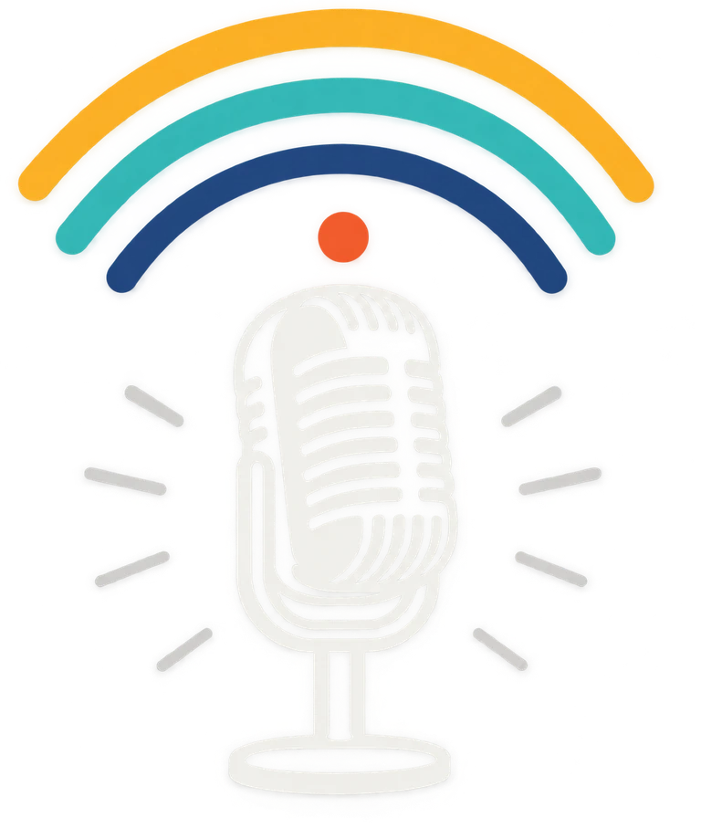

RÁDIO GERAÇÃO ATIVA · UNASP SÃO PAULO
Ideias que encontram sua voz.
Um projeto de comunicação feito na escola, com espaço para criar, informar e compartilhar histórias da comunidade.
Conheça a RGA
COMUNICAÇÃO NA VIDA ESCOLAR
Comunicação que também é aprendizado.
A Rádio Geração Ativa é um projeto de comunicação ligado ao UNASP São Paulo, onde os alunos participam da criação de conteúdos e desenvolvem novas formas de se expressar.
Entre textos, vídeos, notícias e iniciativas estudantis, a RGA aproxima pessoas e transforma a comunicação em uma experiência de participação, pensamento crítico e formação.
Promover comunicação educativa de qualidade, desenvolvendo protagonismo estudantil, pensamento crítico e valores formativos por meio da criação de conteúdos.
Ser referência em comunicação escolar como instrumento de aprendizagem, liderança e impacto positivo na comunidade educativa.
Ética e responsabilidade / Criatividade / Protagonismo juvenil / Formação integral
APRENDER FAZENDO
A comunicação abre espaço para crescer.
Como metodologia ativa interdisciplinar, a RGA fortalece habilidades que acompanham os alunos dentro e fora dos projetos.
- 01
Produção textual
- 02
Oralidade e oratória
- 03
Leitura e interpretação
- 04
Educação midiática
- 05
Trabalho em equipe
- 06
Liderança
- 07
Responsabilidade editorial
MUITOS ASSUNTOS, DIFERENTES OLHARES
Ideias que viram conteúdo.
A RGA reúne propostas de conteúdo que exploram diferentes temas e formatos de comunicação.
-
01
Conexão News
Um espaço de notícias sobre a escola, a comunidade e o mundo.
-
02
Mito ou Verdade?
Quadro investigativo para analisar crenças populares, boatos da internet e fake news.
- 03
Toda Xique
Espaço dedicado à moda cristã, abordando identidade, vestuário, modéstia e bom senso.
- 04
Super Amigão
Voltado ao público infantil e pré-adolescente com foco em amizade, respeito e cooperação.
- 05
A Hora do Sábio
Momentos de reflexão, princípios de sabedoria e orientações práticas para as decisões do cotidiano.
- 06
Viagem Certa
Turismo educativo, geografia e cultura para você aprender a planejar viagens incríveis.
- 07
Canelada
Conteúdos sobre esporte, com resultados, comentários e análises que valorizam o espírito esportivo.
- 08
Viva Melhor
Dicas e cuidados voltados para a saúde física, emocional e bem-estar geral.
- 09
Boa Ideia
Apresentação de projetos, iniciativas solidárias e ideias inovadoras construídas por alunos.
- 10
Tech News
Mundo digital de forma simples: aplicativos úteis, novidades e segurança na internet.
- 11
Parábolas
Histórias curtas e narrativas marcantes trazendo lições de vida morais e espirituais.
- 12
Super Fácil
Dicas práticas de estudos, técnicas de memorização, organização e preparação para provas.
PESSOAS POR TRÁS DAS IDEIAS
Um projeto construído em conjunto.
DIRETORES EXECUTIVOS E COORDENAÇÃO
- Prof. Nelson Jr
- Pr. Arthur Marques
- Profª Letícia W. Dias
- Elaine Nunes
- Irene Ruckdeschel Wruck
NÚCLEO CENTRAL DE PRODUÇÃO
- Julia Nascimento OliveiraEnsino Médio
- Bethina Silva de FariasFundamental II
ENCONTRE A RGA NAS REDES